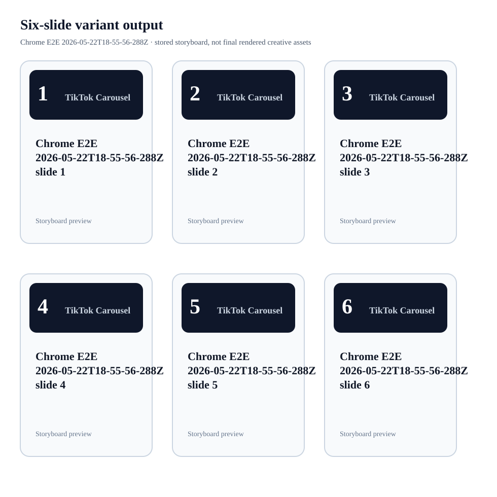

Six-slide variant output
Chrome E2E 2026-05-22T18-55-56-288Z. This is the stored storyboard preview from the Chrome E2E run, not final image generation.

Chrome E2E 2026-05-22T18-55-56-288Z. This is the stored storyboard preview from the Chrome E2E run, not final image generation.
